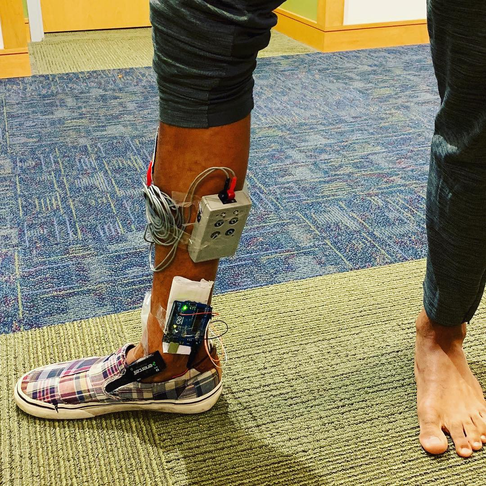
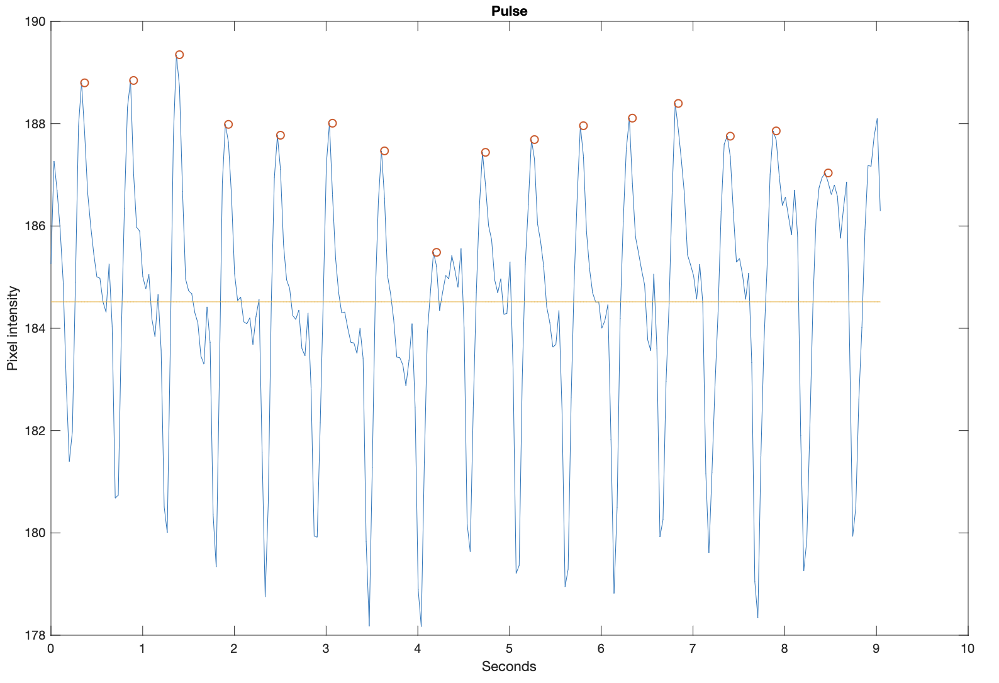
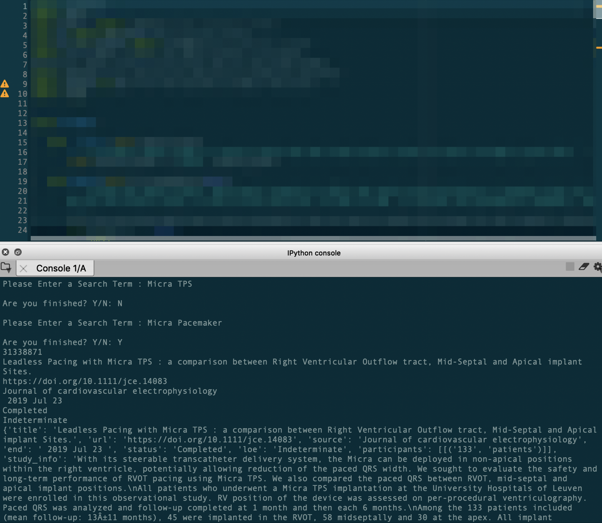

Electromyogram (EMG) and EMG Controlled Servo Motor
During muscle contraction, motor
neurons and muscle cells generate voltage differences
that can be detected. I constructed a simple EMG circuit
capable of detecting these voltage differences as well
as applying successive filtering to generate a cleanly
rectified voltage signal on an Oscilloscope. Using this
voltage, I also wrote a short Arduino script to
control a servo motor that rotated in proportion
to the degree of muscle contraction my forearm
engaged in as measured by the voltage level.

Transcutaneous Electrical Nerve Stimulation (TENS)
Unit to Treat Foot Drop

Foot Drop is a neuromuscular disorder
that prevents a patient from sufficiently dorsiflexing
their foot when walking. In an attempt to treat this
disorder I constructed a device that delivered pulses
of electricity to the tibialis anterior muscle to
actively stimulate motor contraction and lift the
foot. This device was able to measure, by way of
a pressure sensor placed on the heel and an arduino,
when a person was about to initiate a gait cycle and
thus could actively sense when to apply electrical
stimulation and when not to.
A Simple Photoplethysmograph Script in Matlab Using
Mobile Phone
A Photoplethysmograph is a device that
measures changes in blood volume in
the vasculature to determine vitals such
as heart rate. Using Matlab code, I built
a very simple script capable of determine
a person’s heart rate based on a video
obtained through a smart phones camera
and flash. The script measured changes
in the pixel intensity caused by variations
in blood volume in the finger, filtered
the signal, and detected the peaks in
the waveform to calculate the heart rate.
Link To Code
Link To Code

Clinical Research Procurement Script and
Miscellaneous Code for GreenLight Medical, Inc.

During my time as a Medical Device Clinical Research Intern for GreenLight
Medical, Inc.
I was responsible for finding and evaluating clinical research on new and existing medical devices
as well as
creating profiles for medical devices to be used by hospital Value Analysis Committees in their
process of evaluating
requested medical devices. On top of these responsibilities, I also developed a few pieces of Python
code that increased the efficiency and speed of GreenLight Medical’s workflow.
The functionality of some of the scripts I wrote include the following:
- Automatically downloading and converting FDA data (510K/PMA numbers, manufacturer etc.) on tens of thousands of medical devices on the FDA website from CSV format into excel files,
- Automatically downloading the Approval and Summary letters on tens of thousands of medical devices and leveraging Amazon Web Services to analyze these PDF documents to extract pertinent information, and
- Creating a Clinical Research Application that automated the process of searching through numerous clinical databases and rapidly extracted the data of interest.
Visit GreenLight Medical's Website
Due to confidentiality agreements, I am unable to share this code on Github. Feel free to contact me for inquiries